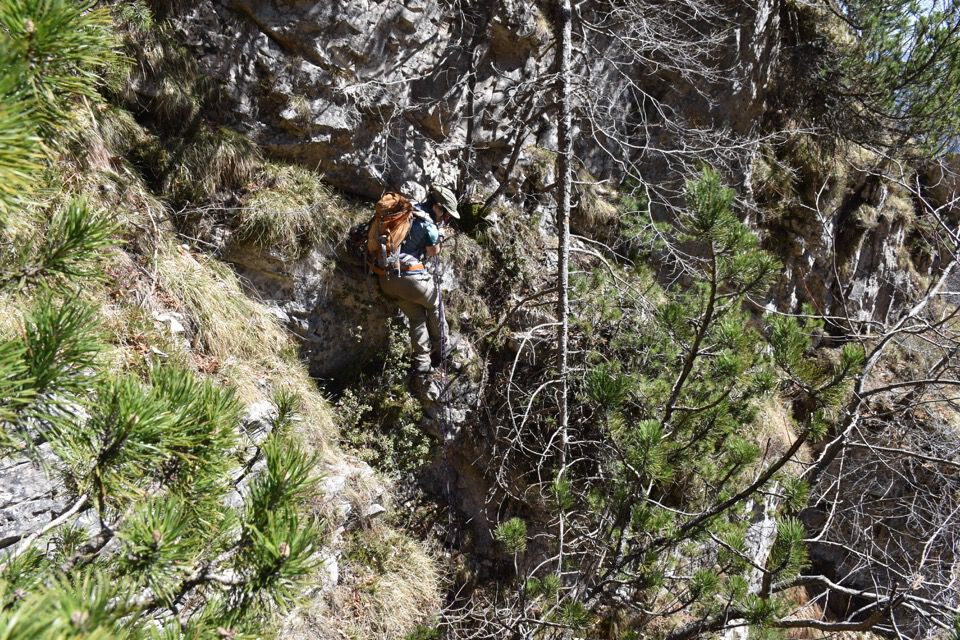

Antonio Armellini m'informa dell'esistenza di un leggendario itinerario di cacciatori che dagli stavoli di val Nuviernulis sale in versante nord sbucando alla forcella biforcuta ad ovest del Cuel di Fedevèiz e ad est dell'antecima sud-est del Cuel Mauròn: il troiàt, ovvero «sentieraccio».
Non bastasse il nome evocativo, sul troiàt aleggia il fascino dell'ignoto assoluto, essendo il percorso quasi completamente nascosto alla vista. Mi pare quasi un sacrilegio scriverne a riguardo: mi capisci, vero?
Dino di Moggessa, cacciatore e massimo conoscitore di questi luoghi, c'ha provato a spiegarci qualcosa, ma non c'abbiamo capito nulla, parliamo linguaggi differenti: noi quello «scientifico» e cartografico, lui quello di una conoscenza diretta e immediata di chi in questi luoghi ha sempre vissuto.
Lungo avvicinamento per sentieri esplorati in gite precedenti.
Stavolo non segnato su carta Tabacco, sul costone fra quello di stavolo Simòn e quello di stavolo delle Fratte.
E ora su per il costone.

Se prima di incontrare Dino non avevamo quasi nessuna informazione, ora abbiamo solo un dubbio tremendo, ovvero che il troiàt sia da tutt'altra parte!

Però... troviamo una cengetta che costringe carponi: non può che essere quella di cui mi parlava il dotôr, dove a suo tempo con la Chicca si era fermato. Anche Dino ci parlava di una cenglute per dove è dovuto passare con un cjamoç...

La cengetta successiva è troppo stretta e butta in fuori, non si passa, decidiamo di calarci brevemente nel rio sottostante. Mentre traffichiamo con la corda ecco che di colpo vediamo un vecchio e malconcio cordino: siamo sulla strada giusta, morale a mille!



L'ingresso nel canalone segreto...
...che si svela come in una profanazione.
Versante est del Cuel Mauròn: prossimo obiettivo?

Ci complichiamo un po' la vita.


L'emozione è enorme.
Dalla forcella ovest verso l'Amariana; vorrei capire come si fa a traversare direttamente a Fedevèiz, cosa che senza dubbio è possibile, ma chissà se ciò va fatto scendendo da questa forcella oppure dall'altra.
Che sia questa (o «queste») la forcje di Fedevèiz di cui parlava Dino? Parlava anche di scendere per un riulàt, che potrebbe essere uno dei due canali che scendono dalle rispettive forcelle: cose da chiarire. Scusa buona per tornare per la terza volta sul Cuel di Fedevèiz...

Attacchiamo il Cuel di Fedevèiz da ovest.

Tagli vecchissimi: è emozionante pensare a chissà chi li ha fatti e chissà quanti anni fa.

Servono le armi giuste.

Déjà Vu.
Gioia ed incredulità: ce l'abbiamo fatta davvero!


Verso la Carnia, col costone della Massele Grande.
Il Cuel Mauròn (mugoso) con la poderosa antecima sud-est q1757 (bruciata).
La val Nuviernulis: una miniera di percorsi esplorativi.

Cuel di Fedevèiz parte seconda.
E ora giù che sono le quattro del pomeriggio!


Antichi mestieri.

Sono davvero contento che questa volta il sentiero per Fedevèiz l'ho trovato. O meglio, nella metà superiore esso è evanescente (ma ho trovato un rio di riferimento da seguire), mentre nella parte inferiore esso è ben battuto. Inspiegabile come la volta scorsa non abbiamo trovato quasi nulla...

«Non è abbastanza rosso».

Tredici orette, neanche troppe considerate le otto ore e mezza di salita.
Questa è una delle mie più grandiose escursioni di sempre.
***
«Fra tutti coloro che cercano, soltanto il mistico ha trovato, ma, prezzo di un favore così eccezionale, non potrà mai dire che cosa, benché egli abbia la certezza che conferisce unicamente il sapere incomunicabile (il vero sapere insomma). La strada sulla quale egli vi inviterà a seguirlo sbocca su una vacuità senza uguali ma, ed è questa la meraviglia, una vacuità che vi colma, poiché si sostituisce a tutti gli universi aboliti.»
(Contro l'immagine in Fascinazione della cenere, Emil Cioran)
***